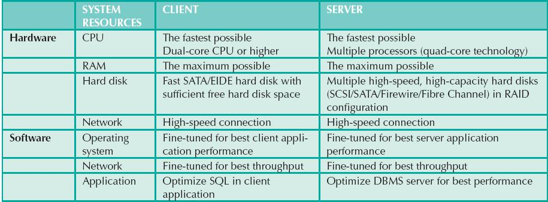

Basic database performance-tuning concepts
Basic database performance-tuning concepts11 DATABASE PERFORMANCE TUNING AND QUERY OPTIMIZATION
In this chapter, you will learn:
Basic database performance-tuning concepts
How a DBMS processes SQL queries
About the importance of indexes in query processing
About the types of decisions the query optimizer has to make
Some common practices used to write efficient SQL code
How to formulate queries and tune the DBMS for optimal performance
Preview
Database performance tuning is a critical topic, yet it usually receives minimal coverage in the database curriculum. Most databases used in classrooms have only a few records per table. As a result, the focus is often on making SQL queries perform an intended task, without considering the efficiency of the query process. In fact, even the most efficient query environment yields no visible performance improvements over the least efficient query environment when only 20 or 30 table rows (records) are queried. Unfortunately, that lack of attention to query efficiency can yield unacceptably slow results in the real world when queries are executed over tens of millions of records. In this chapter, you will learn what it takes to create a more efficient query environment.
NOTE
Because this book focuses on databases, this chapter covers only the factors that directly affect database performance. Also, because performance-tuning techniques can be DBMS-specific, the material in this chapter might not be applicable under all circumstances, nor will it necessarily pertain to all DBMS types. This chapter is designed to build a foundation for the general understanding of database performance-tuning issues and to help you choose appropriate performance-tuning strategies. (For the most current information about tuning your database, consult the vendor’s documentation.)
11.1 DATABASE PERFORMANCE-TUNING CONCEPTS
One of the main functions of a database system is to provide timely answers to end users. End users interact with the DBMS through the use of queries to generate information, using the following sequence:
1. The end-user (client-end) application generates a query.
2. The query is sent to the DBMS (server end).
3. The DBMS (server end) executes the query.
4. The DBMS sends the resulting data set to the end-user (client-end) application.
End users expect their queries to return results as quickly as possible. How do you know that the performance of a database is good? Good database performance is hard to evaluate. How do you know if a 1.06-second query response time is good enough? It is easier to identify bad database performance than good database performance—all it takes is end-user complaints about slow query results. Unfortunately, the same query might perform well one day and not so well two months later. Regardless of end-user perceptions, the goal of database performance is to execute queries as fast as possible. Therefore, database performance must be closely monitored and regularly tuned. Database performance tuning refers to a set of activities and procedures designed to reduce the response time of the database system—that is, to ensure that an end-user query is processed by the DBMS in the minimum amount of time.
The time required by a query to return a result set depends on many factors, which tend to be wide-ranging and to vary among environments and among vendors. The performance of a typical DBMS is constrained by three main factors: CPU processing power, available primary memory (RAM), and input/output (hard disk and network) throughput. Table 11.1 lists some system components and summarizes general guidelines for achieving better query performance.
TABLE 11.1 General Guidelines for Better System Performance

Naturally, the system will perform best when its hardware and software resources are optimized. However, in the real world, unlimited resources are not the norm; internal and external constraints always exist. Therefore, the system components should be optimized to obtain the best throughput possible with existing (and often limited) resources, which is why database performance tuning is important.
Fine-tuning the performance of a system requires a holistic approach. That is, all factors must be checked to ensure that each one operates at its optimum level and has sufficient resources to minimize the occurrence of bottlenecks. Because database design is such an important factor in determining the database system’s performance efficiency, it is worth repeating this book’s mantra:
Good database performance starts with good database design. No amount of fine-tuning will make a poorly designed database perform as well as a well-designed database. This is particularly true when redesigning existing databases, where the end user expects unrealistic performance gains from older databases.
What constitutes a good, efficient database design? From the performance-tuning point of view, the database designer must ensure that the design makes use of features in the DBMS that guarantee the integrity and optimal performance of the database. This chapter provides fundamental knowledge that will help you optimize database performance by selecting the appropriate database server configuration, using indexes, understanding table storage organization and data locations, and implementing the most efficient SQL query syntax.
11.1.1 PERFORMANCE TUNING: CLIENT AND SERVER
In general, database performance-tuning activities can be divided into those on the client side and those on the server side.
• On the client side, the objective is to generate a SQL query that returns the correct answer in the least amount of time, using the minimum amount of resources at the server end. The activities required to achieve that goal are commonly referred to as SQL performance tuning.
• On the server side, the DBMS environment must be properly configured to respond to clients’ requests in the fastest way possible, while making optimum use of existing resources. The activities required to achieve that goal are commonly referred to as DBMS performance tuning.
 ONLINE CONTENT
ONLINE CONTENT
If you want to learn more about clients and servers, check Appendix F, Client/Server Systems, at www.cengagebrain.com.
Keep in mind that DBMS implementations are typically more complex than just a two-tier client/server configuration. However, even in multitier client/server environments that consist of a client front end, application middleware, and database server back end, performance-tuning activities are frequently divided into subtasks to ensure the fastest possible response time between any two component points.
This chapter covers SQL performance-tuning practices on the client side and DBMS performance-tuning practices on the server side. However, before you start learning about the tuning processes, you must first learn more about the DBMS architectural components and processes, and how those processes interact to respond to end users’ requests.
The architecture of a DBMS is represented by the processes and structures (in memory and permanent storage) used to manage a database. Such processes collaborate with one another to perform specific functions. Figure 11.1 illustrates the basic DBMS architecture.
FIGURE 11.1 Basic DBMS architecture
SOURCE: Course Technology/Cengage Learning
Note the following components and functions in Figure 11.1:
• All data in a database are stored in data files. A typical enterprise database is normally composed of several data files. A data file can contain rows from a single table, or it can contain rows from many different tables. A database administrator (DBA) determines the initial size of the data files that make up the database; however, the data files can automatically expand as required in predefined increments known as extends. For example, if more space is required, the DBA can define that each new extend will be in 10 KB or 10 MB increments.
• Data files are generally grouped in file groups or table spaces. A table space or file group is a logical grouping of several data files that store data with similar characteristics. For example, you might have a system table space where the data dictionary table data are stored, a user data table space to store the user-created tables, an index table space to hold all indexes, and a temporary table space to do temporary sorts, grouping, and so on. Each time you create a new database, the DBMS automatically creates a minimum set of table spaces.
• The data cache or buffer cache is a shared, reserved memory area that stores the most recently accessed data blocks in RAM. The data read from the data files are stored in the data cache after the data have been read or before the data are written to the data files. The data cache also caches system catalog data and the contents of the indexes.
• The SQL cache, or procedure cache, is a shared, reserved memory area that stores the most recently executed SQL statements or PL/SQL procedures, including triggers and functions. (To learn more about PL/SQL procedures, triggers, and SQL functions, study Chapter 8, Advanced SQL.) The SQL cache does not store the SQL written by the end user. Rather, the SQL cache stores a “processed” version of the SQL that is ready for execution by the DBMS.
• To work with the data, the DBMS must retrieve the data from permanent storage and place them in RAM. In other words, the data are retrieved from their data files and placed in the data cache.
• To move data from permanent storage (data files) to RAM (data cache), the DBMS issues I/O requests and waits for the replies. An input/output (I/O) request is a low-level data access operation that reads or writes data to and from computer devices, such as memory, hard disks, video, and printers. Note that an I/O disk read operation retrieves an entire physical disk block, generally containing multiple rows, from permanent storage to the data cache, even if you will use only one attribute from only one row. The physical disk block size depends on the operating system and could be 4K, 8K, 16K, 32K, 64K, or even larger. Furthermore, depending on the circumstances, a DBMS might issue a single-block read request or a multiblock read request.
• Working with data in the data cache is many times faster than working with data in the data files because the DBMS does not have to wait for the hard disk to retrieve the data; no hard disk I/O operations are needed to work within the data cache.
• Most performance-tuning activities focus on minimizing the number of I/O operations because using I/O operations is many times slower than reading data from the data cache. For example, as of this writing, RAM access times range from 5 to 70 nanoseconds, while hard disk access times range from 5 to 15 milliseconds. This means that hard disks are about six orders of magnitude (a million times) slower than RAM.
Figure 11.1 also illustrates some typical DBMS processes. Although the number of processes and their names vary from vendor to vendor, the functionality is similar. The following processes are represented in Figure 11.1:
• Listener. The listener process listens for clients’ requests and handles the processing of the SQL requests to other DBMS processes. Once a request is received, the listener passes the request to the appropriate user process.
• User. The DBMS creates a user process to manage each client session. Therefore, when you log on to the DBMS, you are assigned a user process. This process handles all requests you submit to the server. There are many user processes—at least one per logged-in client.
• Scheduler. The scheduler process organizes the concurrent execution of SQL requests. (See Chapter 10, Transaction Management and Concurrency Control.)
• Lock manager. This process manages all locks placed on database objects, including disk pages. (See Chapter 10.)
• Optimizer. The optimizer process analyzes SQL queries and finds the most efficient way to access the data. You will learn more about this process later in the chapter.
11.1.3 DATABASE QUERY OPTIMIZATION MODES
Most of the algorithms proposed for query optimization are based on two principles:
• The selection of the optimum execution order
• The selection of sites to be accessed to minimize communication costs
Within those two principles, a query optimization algorithm can be evaluated on the basis of its operation mode or the timing of its optimization.
Operation modes can be classified as manual or automatic. Automatic query optimization means that the DBMS finds the most cost-effective access path without user intervention. Manual query optimization requires that the optimization be selected and scheduled by the end user or programmer. Automatic query optimization is clearly more desirable from the end user’s point of view, but the cost of such convenience is the increased overhead that it imposes on the DBMS.
Query optimization algorithms can also be classified according to when the optimization is done. Within this timing classification, query optimization algorithms can be static or dynamic.
• Static query optimization takes place at compilation time. In other words, the best optimization strategy is selected when the query is compiled by the DBMS. This approach is common when SQL statements are embedded in procedural programming languages such as C# or Visual Basic .NET. When the program is submitted to the DBMS for compilation, it creates the plan necessary to access the database. When the program is executed, the DBMS uses that plan to access the database.
• Dynamic query optimization takes place at execution time. Database access strategy is defined when the program is executed. Therefore, access strategy is dynamically determined by the DBMS at run time, using the most up-to-date information about the database. Although dynamic query optimization is efficient, its cost is measured by run-time processing overhead. The best strategy is determined every time the query is executed; this could happen several times in the same program.
Finally, query optimization techniques can be classified according to the type of information that is used to optimize the query. For example, queries may be based on statistically based or rule-based algorithms.
• A statistically based query optimization algorithm uses statistical information about the database. The statistics provide information about database characteristics such as size, number of records, average access time, number of requests serviced, and number of users with access rights. These statistics are then used by the DBMS to determine the best access strategy. Within statistically based optimizers, some DBMSs allow setting a goal to specify that the optimizer should attempt to minimize the time to retrieve the first row or the last row. Minimizing the time to retrieve the first row is often used in transaction systems and interactive client environments. In these cases, the goal is to present the first several rows to the user as quickly as possible. Then, while the DBMS waits for the user to scroll through the data, it can fetch the other rows for the query. Setting the optimizer goal to minimize retrieval of the last row is typically done in embedded SQL and inside stored procedures. In these cases, the control will not pass back to the calling application until all of the data have been retrieved; therefore, it is important to retrieve all of the data to the last row as quickly as possible so control can be returned.
• The statistical information is managed by the DBMS and is generated in one of two different modes: dynamic or manual. In the dynamic statistical generation mode, the DBMS automatically evaluates and updates the statistics after each access. In the manual statistical generation mode, the statistics must be updated periodically through a user-selected utility such as IBM’s RUNSTAT command, which is used by DB2 DBMSs.
• A rule-based query optimization algorithm is based on a set of user-defined rules to determine the best query access strategy. The rules are entered by the end user or database administrator, and they are typically general in nature.
Because database statistics play a crucial role in query optimization, this topic is explored in more detail in the next section.
Another DBMS process that plays an important role in query optimization is gathering database statistics. The term database statistics refers to a number of measurements about database objects, such as number of processors used, processor speed, and temporary space available. Such statistics provide a snapshot of database characteristics.
As you will learn later in this chapter, the DBMS uses these statistics to make critical decisions about improving query processing efficiency. Database statistics can be gathered manually by the DBA or automatically by the DBMS. For example, many DBMS vendors support the ANALYZE command in SQL to gather statistics. In addition, many vendors have their own routines to gather statistics. For example, IBM’s DB2 uses the RUNSTATS procedure, while Microsoft’s SQL Server uses the UPDATE STATISTICS procedure and provides the Auto-Update and Auto-Create Statistics options in its initialization parameters. A sample of measurements that the DBMS may gather about various database objects is shown in Table 11.2.
TABLE 11.2 Sample Database Statistics Measurements
DATABASE OBJECT |
SAMPLE MEASUREMENTS |
Tables |
Number of rows, number of disk blocks used, row length, number of columns in each row, number of distinct values in each column, maximum value in each column, minimum value in each column, and columns that have indexes |
Indexes |
Number and name of columns in the index key, number of key values in the index, number of distinct key values in the index key, histogram of key values in an index, and number of disk pages used by the index |
Environment Resources |
Logical and physical disk block size, location and size of data files, and number of extends per data file |
If the object statistics exist, the DBMS will use them in query processing. Most newer DBMSs (such as Oracle, SQL Server, and DB2) automatically gather statistics; others require the DBA to gather statistics manually. To generate the database object statistics manually, you could use the following syntax:
ANALYZE <TABLE/INDEX> object_name COMPUTE STATISTICS;
In SQL Server, use UPDATE STATISTICS <object_name>, where object_name refers to a table or a view.
For example, to generate statistics for the VENDOR table, you would use the following command:
ANALYZE TABLE VENDOR COMPUTE STATISTICS;
In SQL Server, use UPDATE STATISTICS VENDOR;.
When you generate statistics for a table, all related indexes are also analyzed. However, you could generate statistics for a single index by using the following command:
ANALYZE INDEX VEND_NDX COMPUTE STATISTICS;
In the preceding example, VEND_NDX is the name of the index.
In SQL Server, use UPDATE STATISTICS <table_name> <index_name>. An example command would be UPDATE STATISTICS VENDOR VEND_NDX;.
Database statistics are stored in the system catalog in specially designated tables. It is common to periodically regenerate the statistics for database objects, especially database objects that are subject to frequent change. For example, if you own a video store and you have a video rental DBMS, your system will likely use a RENTAL table to store the daily video rentals. That RENTAL table and its associated indexes would be subject to constant inserts and updates as you record daily rentals and returns. Therefore, the RENTAL table statistics you generated last week do not accurately depict the table as it exists today. The more current the statistics are, the better the chances that the DBMS will properly select the fastest way to execute a given query.
Now that you know the basic architecture of DBMS processes and memory structures, and the importance and timing of the database statistics gathered by the DBMS, you are ready to learn how the DBMS processes a SQL query request.
What happens at the DBMS server end when the client’s SQL statement is received? In simple terms, the DBMS processes a query in three phases:
1. Parsing. The DBMS parses the SQL query and chooses the most efficient access/execution plan.
2. Execution. The DBMS executes the SQL query using the chosen execution plan.
3. Fetching. The DBMS fetches the data and sends the result set back to the client.
The processing of SQL DDL statements (such as CREATE TABLE) is different from the processing required by DML statements. The difference is that a DDL statement actually updates the data dictionary tables or system catalog, while a DML statement (SELECT, INSERT, UPDATE, or DELETE) mostly manipulates end-user data. Figure 11.2 shows the general steps required for query processing. Each step will be discussed in the following sections.
SOURCE: Course Technology/Cengage Learning
The optimization process includes breaking down—parsing—the query into smaller units and transforming the original SQL query into a slightly different version of the original SQL code, but one that is fully equivalent and more efficient. Fully equivalent means that the optimized query results are always the same as the original query. More efficient means that the optimized query will almost always execute faster than the original query. (Note that it almost always executes faster because many factors affect the performance of a database, as explained earlier. Those factors include the network, the client computer’s resources, and other queries running concurrently in the same database.) To determine the most efficient way to execute the query, the DBMS may use the database statistics you learned about earlier.
The SQL parsing activities are performed by the query optimizer, which analyzes the SQL query and finds the most efficient way to access the data. This process is the most time-consuming phase in query processing. Parsing a SQL query requires several steps, in which the SQL query is:
• Validated for syntax compliance
• Validated against the data dictionary to ensure that table names and column names are correct
• Validated against the data dictionary to ensure that the user has proper access rights
• Analyzed and decomposed into more atomic components
• Optimized through transformation into a fully equivalent but more efficient SQL query
• Prepared for execution by determining the most efficient execution or access plan
Once the SQL statement is transformed, the DBMS creates what is commonly known as an access plan or execution plan. An access plan is the result of parsing a SQL statement; it contains the series of steps a DBMS will use to execute the query and return the result set in the most efficient way. First, the DBMS checks to see if an access plan already exists for the query in the SQL cache. If it does, the DBMS reuses the access plan to save time. If it does not, the optimizer evaluates various plans and then decides which indexes to use and how to best perform join operations. The chosen access plan for the query is then placed in the SQL cache and made available for use and future reuse.
Access plans are DBMS-specific and translate the client’s SQL query into the series of complex I/O operations required to read the data from the physical data files and generate the result set. Table 11.3 illustrates some I/O operations for an Oracle RDBMS. Most DBMSs perform similar types of operations when accessing and manipulating data sets.
TABLE 11.3 Sample DBMS Access Plan I/O Operations
OPERATION |
DESCRIPTION |
Table scan (full) |
Reads the entire table sequentially, from the first row to the last, one row at a time (slowest) |
Table access (row ID) |
Reads a table row directly, using the row ID value (fastest) |
Index scan (range) |
Reads the index first to obtain the row IDs and then accesses the table rows directly (faster than a full table scan) |
Index access (unique) |
Used when a table has a unique index in a column |
Nested loop |
Reads and compares a set of values to another set of values, using a nested loop style (slow) |
Merge |
Merges two data sets (slow) |
Sort |
Sorts a data set (slow) |
In Table 11.3, note that a table access using a row ID is the fastest method. A row ID is a unique identification for every row saved in permanent storage; it can be used to access the row directly. Conceptually, a row ID is similar to a slip you get when you park your car in an airport parking lot. The parking slip contains the section number and lot number. Using that information, you can go directly to your car without searching every section and lot.
In this phase, all I/O operations indicated in the access plan are executed. When the execution plan is run, the proper locks—if needed—are acquired for the data to be accessed, and the data are retrieved from the data files and placed in the DBMS’s data cache. All transaction management commands are processed during the parsing and execution phases of query processing.
After the parsing and execution phases are completed, all rows that match the specified condition(s) are retrieved, sorted, grouped, and aggregated (if required). During the fetching phase, the rows of the resulting query result set are returned to the client. The DBMS might use temporary table space to store temporary data. In this stage, the database server coordinates the movement of the result set rows from the server cache to the client cache. For example, a given query result set might contain 9,000 rows; the server would send the first 100 rows to the client and then wait for the client to request the next set of rows, until the entire result set is sent to the client.
11.2.4 QUERY PROCESSING BOTTLENECKS
The main objective of query processing is to execute a given query in the fastest way possible with the least amount of resources. As you have seen, the execution of a query requires the DBMS to break down the query into a series of interdependent I/O operations to be executed in a collaborative manner. The more complex a query is, the more complex the operations are, which means that bottlenecks are more likely. A query processing bottleneck is a delay introduced in the processing of an I/O operation that causes the overall system to slow down. In the same way, the more components a system has, the more interfacing is required among the components, increasing the likelihood of bottlenecks. Within a DBMS, five components typically cause bottlenecks:
• CPU. The CPU processing power of the DBMS should match the system’s expected work load. A high CPU utilization might indicate that the processor speed is too slow for the amount of work performed. However, heavy CPU utilization can be caused by other factors, such as a defective component, not enough RAM (the CPU spends too much time swapping memory blocks), a badly written device driver, or a rogue process. A CPU bottleneck will affect not only the DBMS but all processes running in the system.
• RAM. The DBMS allocates memory for specific usage, such as data cache and SQL cache. RAM must be shared among all running processes, including the operating system and DBMS. If there is not enough RAM available, moving data among components that are competing for scarce RAM can create a bottleneck.
• Hard disk. Other common causes of bottlenecks are hard disk speed and data transfer rates. Current hard disk storage technology allows for greater storage capacity than in the past; however, hard disk space is used for more than just storing end-user data. Current operating systems also use the hard disk for virtual memory, which refers to copying areas of RAM to the hard disk as needed to make room in RAM for more urgent tasks. Therefore, more hard disk storage space and faster data transfer rates reduce the likelihood of bottlenecks.
• Network. In a database environment, the database server and the clients are connected via a network. All networks have a limited amount of bandwidth that is shared among all clients. When many network nodes access the network at the same time, bottlenecks are likely.
• Application code. Not all bottlenecks are caused by limited hardware resources. Two of the most common sources of bottlenecks are inferior application code and poorly designed databases. Inferior code can be improved with code optimization techniques, as long as the underlying database design is sound. However, no amount of coding will make a poorly designed database perform better.
Learning how to avoid these bottlenecks and optimize database performance is the main focus of this chapter.
11.3 INDEXES AND QUERY OPTIMIZATION
Indexes are crucial in speeding up data access because they facilitate searching, sorting, and using aggregate functions and even join operations. The improvement in data access speed occurs because an index is an ordered set of values that contains the index key and pointers. The pointers are the row IDs for the actual table rows. Conceptually, a data index is similar to a book index. When you use a book index, you look up a word, which is similar to the index key. The word is accompanied by one or more page numbers where the word is used; these numbers are similar to pointers.
An index scan is more efficient than a full table scan because the index data are preordered and the amount of data is usually much smaller. Therefore, when performing searches, it is almost always better for the DBMS to use the index to access a table than to scan all rows in a table sequentially. For example, Figure 11.3 shows the index representation of a CUSTOMER table with 14,786 rows and the index STATE_NDX on the CUS_STATE attribute.
FIGURE 11.3 Index representation for the CUSTOMER table
SOURCE: Course Technology/Cengage Learning
Suppose you submit the following query:
| SELECT CUS_NAME, CUS_STATE |
| FROM CUSTOMER |
| WHERE CUS_STATE = 'FL'; |
If there is no index, the DBMS will perform a full table scan and read all 14,786 customer rows. Assuming that the index STATE_NDX is created (and analyzed), the DBMS will automatically use the index to locate the first customer with a state equal to 'FL' and then proceed to read all subsequent CUSTOMER rows, using the row IDs in the index as a guide. Assuming that only five rows meet the condition CUS_STATE = 'FL', there are five accesses to the index and five accesses to the data, for a total of 10 I/O accesses. The DBMS would save approximately 14,776 I/O requests for customer rows that do not meet the criteria. That is a lot of CPU cycles!
If indexes are so important, why not index every column in every table? The simple answer is that it is not practical to do so. Indexing every column in every table overtaxes the DBMS in terms of index-maintenance processing, especially if the table has many attributes and rows, or requires many inserts, updates, and deletes.
One measure that determines the need for an index is the data sparsity of the column you want to index. Data sparsity refers to the number of different values a column could have. For example, a STU_SEX column in a STUDENT table can have only two possible values, M or F; therefore, that column is said to have low sparsity. In contrast, the STU_DOB column that stores the student date of birth can have many different date values; therefore, that column is said to have high sparsity. Knowing the sparsity helps you decide whether the use of an index is appropriate. For example, when you perform a search in a column with low sparsity, you are likely to read a high percentage of the table rows anyway; therefore, index processing might be unnecessary work. In Section 11.5, you learn how to determine when an index is recommended.
Most DBMSs implement indexes using one of the following data structures:
• Hash index. A hash index is based on an ordered list of hash values. A hash algorithm is used to create a hash value from a key column. This value points to an entry in a hash table, which in turn points to the actual location of the data row. This type of index is good for simple and fast lookup operations based on equality conditions—for example, LNAME=“Scott” and FNAME=“Shannon”.
• B-tree index. The B-tree index is an ordered data structure organized as an upside-down tree. (See Figure 11.4.) The index tree is stored separately from the data. The lower-level leaves of the B-tree index contain the pointers to the actual data rows. B-tree indexes are “self-balanced,” which means that it takes approximately the same amount of time to access any given row in the index. This is the default and most common type of index used in databases. The B-tree index is used mainly in tables in which column values repeat a relatively small number of times.
• Bitmap index. A bitmap index uses a bit array (0s and 1s) to represent the existence of a value or condition. These indexes are used mostly in data warehouse applications in tables with a large number of rows in which a small number of column values repeat many times. (See Figure 11.4.) Bitmap indexes tend to use less space than B-tree indexes because they use bits instead of bytes to store their data.
Using the preceding index characteristics, a database designer can determine the best type of index to use. For example, assume that a CUSTOMER table has several thousand rows. The CUSTOMER table has two columns that are used extensively for query purposes: CUS_LNAME, which represents a customer’s last name, and REGION_CODE, which can have one of four values (NE, NW, SW, and SE). Based on this information, you could conclude that:
• Because the CUS_LNAME column contains many different values that repeat a relatively small number of times compared to the total number of rows in the table, a B-tree index will be used.
• Because the REGION_CODE column contains only a few different values that repeat a relatively large number of times compared to the total number of rows in the table, a bitmap index will be used. Figure 11.4 shows the B-tree and bitmap representations for the CUSTOMER table used in the previous discussion.
Current-generation DBMSs are intelligent enough to determine the best type of index to use under certain circumstances, provided that the DBMS has updated database statistics. Regardless of which index is chosen, the DBMS determines the best plan to execute a given query. The next section guides you through a simplified example of the type of choices the query optimizer must make.
FIGURE 11.4 B-tree and bitmap index representation
SOURCE: Course Technology/Cengage Learning
Query optimization is the central activity during the parsing phase in query processing. In this phase, the DBMS must choose what indexes to use, how to perform join operations, which table to use first, and so on. Each DBMS has its own algorithms for determining the most efficient way to access the data. The query optimizer can operate in one of two modes:
• A rule-based optimizer uses preset rules and points to determine the best approach to execute a query. The rules assign a “fixed cost” to each SQL operation; the costs are then added to yield the cost of the execution plan. For example, a full table scan has a set cost of 10, while a table access by row ID has a set cost of 3.
• A cost-based optimizer uses sophisticated algorithms based on statistics about the objects being accessed to determine the best approach to execute a query. In this case, the optimizer process adds up the processing cost, the I/O costs, and the resource costs (RAM and temporary space) to determine the total cost of a given execution plan.
The optimizer’s objective is to find alternative ways to execute a query—to evaluate the “cost” of each alternative and then to choose the one with the lowest cost. To understand the function of the query optimizer, consider a simple example. Assume that you want to list all products provided by a vendor based in Florida. To acquire that information, you could write the following query:
SELECT P_CODE, P_DESCRIPT, P_PRICE, V_NAME, V_STATE
FROM PRODUCT, VENDOR
WHERE PRODUCT.V_CODE = VENDOR.V_CODE AND VENDOR.V_STATE = 'FL';
Furthermore, assume that the database statistics indicate the following:
• The PRODUCT table has 7,000 rows.
• The VENDOR table has 300 rows.
• Ten vendors are located in Florida.
• One thousand products come from vendors in Florida.
It is important to point out that only the first two items are available to the optimizer. The second two items are assumed to illustrate the choices that the optimizer must make. Armed with the information in the first two items, the optimizer would try to find the most efficient way to access the data. The primary factor in determining the most efficient access plan is the I/O cost. (Remember, the DBMS always tries to minimize I/O operations.) Table 11.4 shows two sample access plans for the previous query and their respective I/O costs.
TABLE 11.4 Comparing Access Plans and I/O Costs
To make the example easier to understand, the I/O Operations and I/O Cost columns in Table 11.4 estimate only the number of I/O disk reads the DBMS must perform. For simplicity’s sake, it is assumed that there are no indexes and that each row read has an I/O cost of 1. For example, in step A1, the DBMS must calculate the Cartesian product of PRODUCT and VENDOR. To do that, the DBMS must read all rows from PRODUCT (7,000) and all rows from VENDOR (300), yielding a total of 7,300 I/O operations. The same computation is done in all steps. In Table 11.4, you can see how plan A has a total I/O cost that is almost 30 times higher than plan B. In this case, the optimizer will choose plan B to execute the SQL.
NOTE
Not all DBMSs optimize SQL queries the same way. As a matter of fact, Oracle parses queries differently from the methods described in several sections in this chapter. Always read the documentation to examine the optimization requirements for your DBMS implementation.
Given the right conditions, some queries could be answered entirely by using only an index. For example, assume that you are using the PRODUCT table and the index P_QOH_NDX in the P_QOH attribute. Then a query such as SELECT MIN(P_QOH) FROM PRODUCT could be resolved by reading only the first entry in the P_QOH_NDX index, without the need to access any of the data blocks for the PRODUCT table. (Remember that the index defaults to ascending order.)
You learned in Section 11.3 that columns with low sparsity are not good candidates for index creation. However, in some cases an index in a low-sparsity column would be helpful. For example, assume that the EMPLOYEE table has 122,483 rows. If you want to find out how many female employees work at the company, you would write a query such as:
SELECT COUNT(EMP_SEX) FROM EMPLOYEE WHERE EMP_SEX = 'F';
If you do not have an index for the EMP_SEX column, the query would have to perform a full table scan to read all EMPLOYEE rows—and each full row includes attributes you do not need. However, if you have an index on EMP_SEX, the query can be answered by reading only the index data, without the need to access the employee data at all.
11.4.1 USING HINTS TO AFFECT OPTIMIZER CHOICES
Although the optimizer generally performs very well under most circumstances, in some instances the optimizer might not choose the best execution plan. Remember, the optimizer makes decisions based on the existing statistics. If the statistics are old, the optimizer might not do a good job in selecting the best execution plan. Even with current statistics, the optimizer’s choice might not be the most efficient one. Sometimes the end user would like to change the optimizer mode for the current SQL statement. To do that, you need to use hints. Optimizer hints are special instructions for the optimizer that are embedded inside the SQL command text. Table 11.5 summarizes a few of the most common optimizer hints used in standard SQL.
HINT |
USAGE |
ALL_ROWS | Instructs the optimizer to minimize the overall execution time—that is, to minimize the time needed to return all rows in the query result set. This hint is generally used for batch mode processes. For example: |
FIRST_ROWS |
Instructs the optimizer to minimize the time needed to process the first set of rows—that is, to minimize the time needed to return only the first set of rows in the query result set. This hint is generally used for interactive mode processes. For example: |
INDEX(name) |
Forces the optimizer to use the P_QOH_NDX index to process this query. For example: |
Now that you are familiar with the way the DBMS processes SQL queries, you can turn your attention to some general SQL coding recommendations to facilitate the work of the query optimizer.
SQL performance tuning is evaluated from the client perspective. Therefore, the goal is to illustrate some common practices used to write efficient SQL code. A few words of caution are appropriate:
• Most current-generation relational DBMSs perform automatic query optimization at the server end.
• Most SQL performance optimization techniques are DBMS-specific and therefore are rarely portable, even across different versions of the same DBMS. Part of the reason for this behavior is the constant advancement in database technologies.
Does this mean that you should not worry about how a SQL query is written because the DBMS will always optimize it? No, because there is considerable room for improvement. (The DBMS uses general optimization techniques rather than focusing on specific techniques dictated by the special circumstances of the query execution.) A poorly written SQL query can, and usually will, bring the database system to its knees from a performance point of view. The majority of current database performance problems are related to poorly written SQL code. Therefore, although a DBMS provides general optimizing services, a carefully written query almost always outperforms a poorly written one.
Although SQL data manipulation statements include many different commands such as INSERT, UPDATE, DELETE, and SELECT, most recommendations in this section are related to the use of the SELECT statement, and in particular, the use of indexes and how to write conditional expressions.
Indexes are the most important technique used in SQL performance optimization. The key is to know when an index is used. As a general rule, indexes are likely to be used:
• When an indexed column appears by itself in the search criteria of a WHERE or HAVING clause.
• When an indexed column appears by itself in a GROUP BY or ORDER BY clause.
• When a MAX or MIN function is applied to an indexed column.
• When the data sparsity on the indexed column is high.
Indexes are very useful when you want to select a small subset of rows from a large table based on a given condition. If an index exists for the column used in the selection, the DBMS may choose to use it. The objective is to create indexes with high selectivity. Index selectivity is a measure of the likelihood that an index will be used in query processing. Here are some general guidelines for creating and using indexes:
• Create indexes for each single attribute used in a WHERE, HAVING, ORDER BY, or GROUP BY clause. If you create indexes in all single attributes used in search conditions, the DBMS will access the table using an index scan instead of a full table scan. For example, if you have an index for P_PRICE, the condition P_PRICE > 10.00 can be solved by accessing the index instead of sequentially scanning all table rows and evaluating P_PRICE for each row. Indexes are also used in join expressions, such as in CUSTOMER.CUS_CODE = INVOICE.CUS_CODE.
• Do not use indexes in small tables or tables with low sparsity. Remember, small tables and low-sparsity tables are not the same thing. A search condition in a table with low sparsity may return a high percentage of table rows anyway, making the index operation too costly and making the full table scan a viable option. Using the same logic, do not create indexes for tables with few rows and few attributes—unless you must ensure the existence of unique values in a column.
• Declare primary and foreign keys so the optimizer can use the indexes in join operations. All natural joins and old-style joins will benefit if you declare primary keys and foreign keys because the optimizer will use the available indexes at join time. (The declaration of a PK or FK will automatically create an index for the declared column.) Also, for the same reason, it is better to write joins using the SQL JOIN syntax. (See Chapter 8, Advanced SQL.)
• Declare indexes in join columns other than PK or FK. If you perform join operations on columns other than the primary and foreign keys, you might be better off declaring indexes in those columns.
You cannot always use an index to improve performance. For example, using the data shown in Table 11.6 in the next section, the creation of an index for P_MIN will not help the search condition P_QOH > P_MIN * 1.10. The reason is that in some DBMSs, indexes are ignored when you use functions in the table attributes. However, major databases such as Oracle, SQL Server, and DB2 now support function-based indexes. A function-based index is an index based on a specific SQL function or expression. For example, you could create an index on YEAR(INV_DATE). Function-based indexes are especially useful when dealing with derived attributes. For example, you could create an index on EMP_SALARY + EMP_COMMISSION.
How many indexes should you create? It bears repeating that you should not create an index for every column in a table. Too many indexes will slow down INSERT, UPDATE, and DELETE operations, especially if the table contains many thousands of rows. Furthermore, some query optimizers will choose only one index to be the driving index for a query, even if your query uses conditions in many different indexed columns. Which index does the optimizer use? If you use the cost-based optimizer, the answer will change with time as new rows are added to or deleted from the tables. In any case, you should create indexes in all search columns and then let the optimizer choose. It is important to constantly evaluate the index usage—monitor, test, evaluate, and improve it if performance is not adequate.
11.5.2 CONDITIONAL EXPRESSIONS
A conditional expression is normally placed within the WHERE or HAVING clauses of a SQL statement. Also known as conditional criteria, a conditional expression restricts the output of a query to only the rows that match the conditional criteria. Generally, the conditional criteria have the form shown in Table 11.6.
TABLE 11.6 Conditional Criteria
OPERAND1 |
CONDITIONAL OPERATOR |
OPERAND2 |
P_PRICE |
> |
10.00 |
V_STATE |
= |
FL |
V_CONTACT |
LIKE |
Smith% |
P_QOH |
> |
P_MIN * 1.10 |
In Table 11.6, note that an operand can be:
• A simple column name such as P_PRICE or V_STATE
• A literal or a constant such as the value 10.00 or the text 'FL'
• An expression such as P_MIN * 1.10
Most of the query optimization techniques mentioned next are designed to make the optimizer’s work easier. The following common practices are used to write efficient conditional expressions in SQL code.
• Use simple columns or literals as operands in a conditional expression—avoid the use of conditional expressions with functions whenever possible. Comparing the contents of a single column to a literal is faster than comparing to expressions. For example, P_PRICE > 10.00 is faster than P_QOH > P_MIN * 1.10 because the DBMS must evaluate the P_MIN * 1.10 expression first. The use of functions in expressions also adds to the total query execution time. For example, if your condition is UPPER (V_NAME) = ‘JIM’, try to use V_NAME = ‘JIM’ if all names in the V_NAME column are stored with proper capitalization.
• Numeric field comparisons are faster than character, date, and NULL comparisons. In search conditions, comparing a numeric attribute to a numeric literal is faster than comparing a character attribute to a character literal. In general, the CPU handles numeric comparisons (integer and decimal) faster than character and date comparisons. Because indexes do not store references to null values, NULL conditions involve additional processing, and therefore tend to be the slowest of all conditional operands.
• Equality comparisons are generally faster than inequality comparisons. For example, P_PRICE = 10.00 is processed faster because the DBMS can do a direct search using the index in the column. If there are no exact matches, the condition is evaluated as false. However, if you use an inequality symbol (>, >=, <, <=), the DBMS must perform additional processing to complete the request, because there will almost always be more “greater than” or “less than” values in the index than “equal” values. With the exception of NULL, the slowest of all comparison operators is LIKE with wildcard symbols, as in V_CONTACT LIKE “%glo%”. Also, using the “not equal” symbol (<>) yields slower searches, especially when the sparsity of the data is high—that is, when there are many more different values than there are equal values.
• Whenever possible, transform conditional expressions to use literals. For example, if your condition is P_PRICE - 10 = 7, change it to read P_PRICE = 17. Also, if you have a composite condition such as:
P_QOH < P_MIN AND P_MIN = P_REORDER AND P_QOH = 10
change it to read:
P_QOH = 10 AND P_MIN = P_REORDER AND P_MIN > 10
• When using multiple conditional expressions, write the equality conditions first. Note that this was done in the previous example. Remember, equality conditions are faster to process than inequality conditions. Although most RDBMSs will automatically do this for you, paying attention to this detail lightens the load for the query optimizer. The optimizer will not have to do what you have already done.
• If you use multiple AND conditions, write the condition most likely to be false first. If you use this technique, the DBMS will stop evaluating the rest of the conditions as soon as it finds a conditional expression that is evaluated as false. Remember, for multiple AND conditions to be found true, all conditions must be evaluated as true. If one of the conditions evaluates to false, the whole set of conditions will be evaluated as false. If you use this technique, the DBMS will not waste time unnecessarily evaluating additional conditions. Naturally, the use of this technique implies knowledge of the sparsity of the data set. For example, look at the following condition list:
• P_PRICE > 10 AND V_STATE = 'FL'
If you know that only a few vendors are located in Florida, you could rewrite this condition as:
V_STATE = 'FL' AND P_PRICE > 10
• When using multiple OR conditions, put the condition most likely to be true first. By doing this, the DBMS will stop evaluating the remaining conditions as soon as it finds a conditional expression that is evaluated as true. Remember, for multiple OR conditions to evaluate to true, only one of the conditions must be evaluated as true.
NOTE
Oracle does not evaluate queries as described here. Instead, Oracle evaluates conditions from last to first.
• Whenever possible, try to avoid the use of the NOT logical operator. It is best to transform a SQL expression that contains a NOT logical operator into an equivalent expression. For example:
NOT (P_PRICE > 10.00) can be written as P_PRICE <= 10.00.
Also, NOT (EMP_SEX = 'M') can be written as EMP_SEX = 'F'.
Queries are usually written to answer questions. For example, if an end user gives you a sample output and tells you to match that output format, you must write the corresponding SQL. To get the job done, you must carefully evaluate what columns, tables, and computations are required to generate the desired output. To do that, you must have a good understanding of the database environment and the database that will be the focus of your SQL code.
This section focuses on SELECT queries because they are the queries you will find in most applications. To formulate a query, you would normally follow these steps:
1. Identify what columns and computations are required. The first step is needed to clearly determine what data values you want to return. Do you want to return just the names and addresses, or do you also want to include some computations? Remember that all columns in the SELECT statement should return single values.
a. Do you need simple expressions? For example, do you need to multiply the price by the quantity on hand to generate the total inventory cost? You might need some single attribute functions such as DATE(), SYSDATE(), or ROUND().
b. Do you need aggregate functions? If you need to compute the total sales by product, you should use a GROUP BY clause. In some cases, you might need to use a subquery.
c. Determine the granularity of the raw data required for your output. Sometimes, you might need to summarize data that are not readily available in any table. In such cases, you might consider breaking the query into multiple subqueries and storing those subqueries as views. Then you could create a top-level query that joins those views and generates the final output.
2. Identify the source tables. Once you know what columns are required, you can determine the source tables used in the query. Some attributes appear in more than one table. In those cases, try to use the least number of tables in your query to minimize the number of join operations.
3. Determine how to join the tables. Once you know what tables you need in your query statement, you must properly identify how to join the tables. In most cases, you will use some type of natural join, but in some instances, you might need to use an outer join.
4. Determine what selection criteria are needed. Most queries involve some type of selection criteria. In this case, you must determine what operands and operators are needed in your criteria. Ensure that the data type and granularity of the data in the comparison criteria are correct.
a. Simple comparison. In most cases, you will be comparing single values—for example, P_PRICE > 10.
b. Single value to multiple values. If you are comparing a single value to multiple values, you might need to use an IN comparison operator—for example, V_STATE IN ('FL', 'TN', 'GA').
c. Nested comparisons. In other cases, you might need to have some nested selection criteria involving subqueries—for example, P_PRICE >= (SELECT AVG(P_PRICE) FROM PRODUCT).
d. Grouped data selection. On other occasions, the selection criteria might apply not to the raw data but to the aggregate data. In those cases, you need to use the HAVING clause.
5. Determine the order in which to display the output. Finally, the required output might be ordered by one or more columns. In those cases, you need to use the ORDER BY clause. Remember that the ORDER BY clause is one of the most resource-intensive operations for the DBMS.
DBMS performance tuning includes global tasks such as managing the DBMS processes in primary memory (allocating memory for caching purposes) and managing the structures in physical storage (allocating space for the data files).
Fine-tuning the performance of the DBMS also includes applying several practices examined in the previous section. For example, the DBA must work with developers to ensure that the queries perform as expected—creating the indexes to speed up query response time and generating the database statistics required by cost-based optimizers.
DBMS performance tuning at the server end focuses on setting the parameters used for:
• Data cache. The data cache size must be set large enough to permit as many data requests as possible to be serviced from the cache. Each DBMS has settings that control the size of the data cache; some DBMSs might require a restart. This cache is shared among all database users. The majority of primary memory resources will be allocated to the data cache.
• SQL cache. The SQL cache stores the most recently executed SQL statements (after the SQL statements have been parsed by the optimizer). Generally, if you have an application with multiple users accessing a database, the same query will likely be submitted by many different users. In those cases, the DBMS will parse the query only once and execute it many times, using the same access plan. In that way, the second and subsequent SQL requests for the same query are served from the SQL cache, skipping the parsing phase.
• Sort cache. The sort cache is used as a temporary storage area for ORDER BY or GROUP BY operations, as well as for index-creation functions.
• Optimizer mode. Most DBMSs operate in one of two optimization modes: cost-based or rule-based. Others automatically determine the optimization mode based on whether database statistics are available. For example, the DBA is responsible for generating the database statistics that are used by the cost-based optimizer. If the statistics are not available, the DBMS uses a rule-based optimizer.
Managing the physical storage details of the data files also plays an important role in DBMS performance tuning. Note the following general recommendations for physical storage of databases:
• Use RAID (redundant array of independent disks) to provide both performance improvement and fault tolerance, and a balance between them. Fault tolerance means that in case of failure, data can be reconstructed and retrieved. RAID systems use multiple disks to create virtual disks (storage volumes) formed by several individual disks. Table 11.7 describes the most common RAID configurations.
RAID LEVEL | DESCRIPTION |
0 | The data blocks are spread over separate drives. Also known as striped array. Provides increased performance but no fault tolerance. Requires a minimum of two drives. |
1 | The same data blocks are written (duplicated) to separate drives. Also referred to as mirroring or duplexing. Provides increased read performance and fault tolerance via data redundancy. Requires a minimum of two drives. |
3 | The data are striped across separate drives, and parity data are computed and stored in a dedicated drive. (Parity data are specially generated data that permit the reconstruction of corrupted or missing data.) Provides good read performance and fault tolerance via parity data. Requires a minimum of three drives. |
5 | The data and the parity data are striped across separate drives. Provides good read performance and fault tolerance via parity data. Requires a minimum of three drives. |
• Minimize disk contention. Use multiple, independent storage volumes with independent spindles (rotating disks) to minimize hard disk cycles. Remember, a database is composed of many table spaces, each with a particular function. In turn, each table space is composed of several data files in which the data are actually stored. A database should have at least the following table spaces:
- System table space. This is used to store the data dictionary tables. It is the most frequently accessed table space and should be stored in its own volume.
- User data table space. This is used to store end-user data. You should create as many user data table spaces and data files as are required to balance performance and usability. For example, you can create and assign a different user data table space for each application and each distinct group of users, but this is not necessary for each user.
- Index table space. This is used to store indexes. You can create and assign a different index table space for each application and each group of users. The index table space data files should be stored on a storage volume that is separate from user data files or system data files.
- Temporary table space. This is used as a temporary storage area for merge, sort, or set aggregate operations. You can create and assign a different temporary table space for each application and each group of users.
- Rollback segment table space. This is used for transaction-recovery purposes.
• Put high-usage tables in their own table spaces so the database minimizes conflict with other tables.
• Assign separate data files in separate storage volumes for the indexes, system, and high-usage tables. This ensures that index operations will not conflict with end-user data or data dictionary table access operations. Another advantage of this approach is that you can use different disk block sizes in different volumes. For example, the data volume can use a 16 K block size, while the index volume can use an 8 K block size. Remember that the index record size is generally smaller, and by changing the block size you will reduce contention and minimize I/O operations. This is very important; many database administrators overlook indexes as a source of contention. By using separate storage volumes and different block sizes, the I/O operations on data and indexes will happen asynchronously (at different times); more importantly, the likelihood of write operations blocking read operations is reduced, as page locks tend to lock fewer records.
• Take advantage of the various table storage organizations available in the database. For example, in Oracle consider the use of index-organized tables (IOT); in SQL Server, consider clustered index tables. An index-organized table (or clustered index table) is a table that stores the end-user data and the index data in consecutive locations on permanent storage. This type of storage organization provides a performance advantage to tables that are commonly accessed through a given index order, because the index contains the index key as well as the data rows. Therefore, the DBMS tends to perform fewer I/O operations.
• Partition tables based on usage. Some RDBMSs support the horizontal partitioning of tables based on attributes. (See Chapter 12, Distributed Database Management Systems.) By doing so, a single SQL request can be processed by multiple data processors. Put the table partitions closest to where they are used the most.
• Use denormalized tables where appropriate. In other words, you might be able to improve performance by taking a table from a higher normal form to a lower normal form—typically, from third to second normal form. This technique adds data duplication, but it minimizes join operations. (Denormalization was discussed in Chapter 6, Normalization of Database Tables.)
• Store computed and aggregate attributes in tables. In short, use derived attributes in your tables. For example, you might add the invoice subtotal, the amount of tax, and the total in the INVOICE table. Using derived attributes minimizes computations in queries and join operations.
11.8 QUERY OPTIMIZATION EXAMPLE
Now that you have learned the basis of query optimization, you are ready to test your new knowledge. A simple example illustrates how the query optimizer works and how you can help it work. The example is based on the QOVENDOR and QOPRODUCT tables, which are similar to tables you used in previous chapters. However, the QO prefix is used for the table name to ensure that you do not overwrite previous tables.
ONLINE CONTENT
The databases and scripts used in this chapter are available at www.cengagebrain.com.
To perform this query optimization example, you will use the Oracle SQL*Plus interface. Some preliminary work must be done before you can start testing query optimization, as explained in the following steps:
1. Log in to Oracle SQL*Plus using the username and password provided by your instructor.
2. Create a fresh set of tables, using the QRYOPTDATA.SQL script file at www.cengagebrain.com. This step is necessary so that Oracle has a new set of tables and the new tables contain no statistics. At the SQL> prompt, type:
@path\QRYOPTDATA.SQL
where path is the location of the file in your computer.
3. Create the PLAN_TABLE, which is a special table used by Oracle to store the access plan information for a given query. End users can then query the PLAN_TABLE to see how Oracle will execute the query. To create the PLAN_TABLE, run the UTLXPLAN.SQL script file in the RDBMS\ADMIN folder of your Oracle RDBMS installation. The UTLXPLAN.SQL script file is also available at www.cengagebrain.com. At the SQL prompt, type:
@path\UTLXPLAN.SQL
You use the EXPLAIN PLAN command to store the execution plan of a SQL query in the PLAN_TABLE. Then, you use the SELECT * FROM TABLE(DBMS_XPLAN.DISPLAY) command to display the access plan for a given SQL statement.
NOTE
Oracle 11g automatically defaults to cost-based optimization without giving you a choice. Oracle versions prior to Oracle 10g default to the Choose optimization mode, which implies that the DBMS will choose either rule-based or cost-based optimization, depending on the availability of table statistics.
To see the access plan used by the DBMS to execute your query, use the EXPLAIN PLAN and SELECT statements, as shown in Figure 11.5. Note that the first SQL statement generates the statistics for the QOVENDOR table. Also, the initial access plan in Figure 11.5 uses a full table scan on the QOVENDOR table, and the cost of the plan is 4.
FIGURE 11.5 Initial explain plan
SOURCE: Course Technology/Cengage Learning
Now create an index on V_AREACODE (note that V_AREACODE is used in the ORDER BY clause) and see how it affects the access plan generated by the cost-based optimizer. The results are shown in Figure 11.6.
FIGURE 11.6 Explain plan after index on V_AREACODE
SOURCE: Course Technology/Cengage Learning
In Figure 11.6, note that the new access plan cuts the cost of executing the query by half! Also note that this new plan scans the QOV_NDX1 index and accesses the QOVENDOR rows, using the index row ID. (Remember that access by row ID is one of the fastest access methods.) In this case, the creation of the QOV_NDX1 index had a positive impact on overall query optimization results.
At other times, indexes do not necessarily help in query optimization, such as when you have indexes on small tables or when the query accesses a great percentage of table rows anyway. Note what happens when you create an index on V_NAME. The new access plan is shown in Figure 11.7. (Note that V_NAME is used on the WHERE clause as a conditional expression operand.)
FIGURE 11.7 Explain plan after index on V_NAME
SOURCE: Course Technology/Cengage Learning
As you can see in Figure 11.7, creation of the second index did not help the query optimization. However, on some occasions an index might be used by the optimizer, but it is not executed because of the way the query is written. For example, Figure 11.8 shows the access plan for a different query using the V_NAME column.
FIGURE 11.8 Access plan using index on V_NAME
SOURCE: Course Technology/Cengage Learning
In Figure 11.8, note that the access plan for this new query uses the QOV_NDX2 index on the V_NAME column. What would happen if you wrote the same query, using the UPPER function on V_NAME? The results are illustrated in Figure 11.9.
FIGURE 11.9 Access plan using functions on indexed columns
SOURCE: Course Technology/Cengage Learning
As Figure 11.9 shows, the use of a function on an indexed column caused the DBMS to perform additional operations that increased the cost of the query. The same query might produce different costs if your tables contain many more rows and if the index sparsity is different.
Now use the QOPRODUCT table to demonstrate how an index can help when aggregate function queries are being run. For example, Figure 11.10 shows the access plan for a SELECT statement using the MAX(P_PRICE) aggregate function. This plan uses a full table scan with a total cost of 3.
FIGURE 11.10 First explain plan: aggregate function on a non-indexed column
SOURCE: Course Technology/Cengage Learning
A cost of 3 is very low already, but you could improve the previous query performance by creating an index on P_PRICE. Figure 11.11 shows how the plan cost is reduced by two-thirds after the index is created and the QOPRODUCT table is analyzed. Also note that the second version of the access plan uses only the index QOP_NDX2 to answer the query; the QOPRODUCT table is never accessed.
FIGURE 11.11 Second explain plan: aggregate function on an indexed column
SOURCE: Course Technology/Cengage Learning
Although the few examples in this section show the importance of proper index selection for query optimization, you also saw examples in which index creation does not improve query performance. As a DBA, you should be aware that the main goal is to optimize overall database performance—not just for a single query but for all requests and query types. Most database systems provide advanced graphical tools for performance monitoring and testing. For example, Figure 11.12 shows the graphical representation of the access plan using the Oracle 9i graphical tools. (Oracle 11g does not include this interface.)
FIGURE 11.12 Oracle 9i tools for query optimization
SOURCE: Course Technology/Cengage Learning
 Database performance tuning refers to a set of activities and procedures designed to ensure that an end-user query is processed by the DBMS in the least amount of time.
Database performance tuning refers to a set of activities and procedures designed to ensure that an end-user query is processed by the DBMS in the least amount of time.
SQL performance tuning refers to activities on the client side that are designed to generate SQL code that returns the correct answer in the least amount of time, using the minimum amount of resources at the server end.
DBMS performance tuning refers to activities on the server side that are oriented so the DBMS is properly configured to respond to clients’ requests in the fastest way possible while making optimum use of existing resources.
The DBMS architecture is represented by the many processes and structures (in memory and permanent storage) used to manage a database.
Database statistics refer to a number of measurements gathered by the DBMS that describe a snapshot of the database objects’ characteristics. The DBMS gathers statistics about objects such as tables, indexes, and available resources, which include number of processors used, processor speed, and temporary space available. The DBMS uses the statistics to make critical decisions about improving query processing efficiency.
DBMSs process queries in three phases. In the parsing phase, the DBMS parses the SQL query and chooses the most efficient access/execution plan. In the execution phase, the DBMS executes the SQL query using the chosen execution plan. In the fetching phase, the DBMS fetches the data and sends the result set back to the client.
Indexes are crucial in the process that speeds up data access. Indexes facilitate searching, sorting, and using aggregate functions and join operations. The improvement in data access speed occurs because an index is an ordered set of values that contains the index key and pointers. Data sparsity refers to the number of different values a column could have. Indexes are recommended in high-sparsity columns used in search conditions.
During query optimization, the DBMS must choose what indexes to use, how to perform join operations, which table to use first, and so on. Each DBMS has its own algorithms for determining the most efficient way to access the data. The two most common approaches are rule-based and cost-based optimization.
A rule-based optimizer uses preset rules and points to determine the best approach to execute a query. The rules assign a ”fixed cost” to each SQL operation; the costs are then added to yield the cost of the execution plan.
A cost-based optimizer uses sophisticated algorithms based on statistics about the objects being accessed to determine the best approach to execute a query. In this case, the optimizer process adds up the processing cost, the I/O costs, and the resource costs (RAM and temporary space) to determine the total cost of a given execution plan.
Hints are used to change the optimizer mode for the current SQL statement. Hints are special instructions for the optimizer that are embedded inside the SQL command text.
SQL performance tuning deals with writing queries that make good use of the statistics. In particular, queries should make good use of indexes. Indexes are very useful when you want to select a small subset of rows from a large table based on a condition. When an index exists for the column used in the selection, the DBMS may choose to use it. The objective is to create indexes with high selectivity. Index selectivity is a measure of the likelihood that an index will be used in query processing. It is also important to write conditional statements using some common principles.
Query formulation deals with how to translate business questions into specific SQL code to generate the required results. To do this, you must carefully evaluate which columns, tables, and computations are required to generate the desired output.
DBMS performance tuning includes tasks such as managing the DBMS processes in primary memory (allocating memory for caching purposes) and managing the structures in physical storage (allocating space for the data files).
ONLINE CONTENT
Flashcards and crossword puzzles for key term practice are available at www.cengagebrain.com.
1. What is SQL performance tuning?
2. What is database performance tuning?
3. What is the focus of most performance-tuning activities, and why does that focus exist?
4. What are database statistics, and why are they important?
5. How are database statistics obtained?
6. What database statistics measurements are typical of tables, indexes, and resources?
7. How is the processing of SQL DDL statements (such as CREATE TABLE) different from the processing required by DML statements?
8. In simple terms, the DBMS processes a query in three phases. What are those phases, and what is accomplished in each phase?
9. If indexes are so important, why not index every column in every table? (Include a brief discussion of the role played by data sparsity.)
10. What is the difference between a rule-based optimizer and a cost-based optimizer?
11. What are optimizer hints, and how are they used?
12. What are some general guidelines for creating and using indexes?
13. Most query optimization techniques are designed to make the optimizer’s work easier. What factors should you keep in mind if you intend to write conditional expressions in SQL code?
14. What recommendations would you make for managing the data files in a DBMS with many tables and indexes?
15. What does RAID stand for, and what are some commonly used RAID levels?
Problems 1 and 2 are based on the following query:
SELECT EMP_LNAME, EMP_FNAME, EMP_AREACODE, EMP_SEX
FROM EMPLOYEE
WHERE EMP_SEX = 'F' AND EMP_AREACODE = '615'
ORDER BY EMP_LNAME, EMP_FNAME;
2. What indexes should you create? Write the required SQL commands.
3. Using Table 11.4 as an example, create two alternative access plans. Use the following assumptions:
a. There are 8,000 employees.
b. There are 4,150 female employees.
c. There are 370 employees in area code 615.
d. There are 190 female employees in area code 615.
Problems 4–6 are based on the following query:
SELECT EMP_LNAME, EMP_FNAME, EMP_DOB, YEAR(EMP_DOB) AS YEAR
FROM EMPLOYEE
WHERE YEAR(EMP_DOB) = 1966;
6. What type of database I/O operations will likely be used by the query? (See Table 11.3.)
Problems 7-10 are based on the ER model shown in Figure P11.7 and on the query shown after the figure.
FIGURE P11.7 The Ch11_SaleCo ER model
SOURCE: Course Technology/Cengage Learning
SELECT P_CODE, P_PRICE
FROM PRODUCT
WHERE P_PRICE >= (SELECT AVG(P_PRICE) FROM PRODUCT);
7. Assuming there are no table statistics, what type of optimization will the DBMS use?
8. What type of database I/O operations will likely be used by the query? (See Table 11.3.)
Problems 11-14 are based on the following query:
SELECT P_CODE, SUM(LINE_UNITS)
FROM LINE
GROUP BY P_CODE
HAVING SUM(LINE_UNITS) > (SELECT MAX(LINE_UNITS) FROM LINE);
11. What is the likely data sparsity of the LINE_UNITS column?
12. Should you create an index? If so, what would the index column(s) be, and why would you create the index? If not, explain your reasoning.
13. Should you create an index on P_CODE? If so, write the SQL command to create the index. If not, explain your reasoning.
Problems 15 and 16 are based on the following query:
SELECT P_CODE, P_QOH*P_PRICE
FROM PRODUCT
WHERE P_QOH*P_PRICE > (SELECT AVG(P_QOH*P_PRICE) FROM PRODUCT);
15. What is the likely data sparsity of the P_QOH and P_PRICE columns?
16. Should you create an index? If so, what would the index column(s) be, and why should you create the index?
Problems 17–21 are based on the following query:
SELECT V_CODE, V_NAME, V_CONTACT, V_STATE
FROM VENDOR
WHERE V_STATE = 'TN' ORDER BY V_NAME;
17. What indexes should you create and why? Write the SQL command to create the indexes.
18. Assume that 10,000 vendors are distributed as shown in Table P11.18. What percentage of rows will be returned by the query?
19. What type of I/O database operations would most likely be used to execute the query?
20. Using Table 11.4 as an example, create two alternative access plans.
21. Assume that you have 10,000 different products stored in the PRODUCT table and that you are writing a Web-based interface to list all products with a quantity on hand (P_QOH) that is less than or equal to the minimum quantity, P_MIN. What optimizer hint would you use to ensure that your query returns the result set to the Web interface in the least time possible? Write the SQL code.
Problems 22–24 are based on the following query:
SELECT P_CODE, P_DESCRIPT, P_PRICE, P.V_CODE, V_STATE
FROM PRODUCT P, VENDOR V
WHERE P.V_CODE = V.V_CODE
AND V_STATE = 'NY'
AND V_AREACODE = '212'
ORDER BY P_PRICE;
23. Write the commands required to create the indexes you recommended in Problem 22.
24. Write the command(s) used to generate the statistics for the PRODUCT and VENDOR tables.
Problems 25 and 26 are based on the following query:
SELECT P_CODE, P_DESCRIPT, P_QOH, P_PRICE, V_CODE
FROM PRODUCT
WHERE V_CODE = '21344'
ORDER BY P_CODE;
25. What index would you recommend, and what command would you use?
26. How should you rewrite the query to ensure that it uses the index you created in your solution to Problem 25?
Problems 27 and 28 are based on the following query:
SELECT P_CODE, P_DESCRIPT, P_QOH, P_PRICE, V_CODE
FROM PRODUCT
WHERE P_QOH < P_MIN
AND P_MIN = P_REORDER
AND P_REORDER = 50
ORDER BY P_QOH;
27. Use the recommendations given in Section 11.5.2 to rewrite the query and produce the required results more efficiently.
28. What indexes would you recommend? Write the commands to create those indexes.
Problems 29–32 are based on the following query:
SELECT CUS_CODE, MAX(LINE_UNITS*LINE_PRICE)
FROM CUSTOMER NATURAL JOIN INVOICE NATURAL JOIN LINE
WHERE CUS_AREACODE = '615'
GROUP BY CUS_CODE;
29. Assuming that you generate 15,000 invoices per month, what recommendation would you give the designer about the use of derived attributes?
30. Assuming that you follow the recommendations you gave in Problem 29, how would you rewrite the query?
31. What indexes would you recommend for the query you wrote in Problem 30, and what SQL commands would you use?
32. How would you rewrite the query to ensure that the index you created in Problem 31 is used?